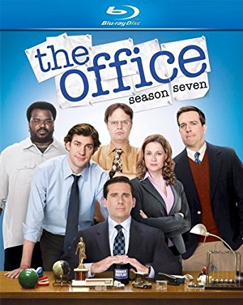

Mayara Maria Triveloni
Eu sou Video com Filmes e Séries
24 anos, estudante de Engenharia de Informação
A escolha do avatar está baseada na minha infância, o qual amava assistir ao desenho Bob Esponja, devido a leveza de cada episódio.

A escolha de "Eu sou Vídeo com Filmes e Séries" se deu, visto que em meu tempo de descanso e lazer, amo assistir filmes e séries, portanto, é possível afirmar que este é o meu passatempo favorito. Sou eclética e me interesso por diferentes gêneros de filmes/séries (por exemplo, ficção científica, suspense e drama), mas quando o intuito está em relaxar e se desligar da rotina corrida do dia-a-dia, me interesso pelo entretenimento que traga um pouco de humor as histórias da vida cotidiana, como as sitcoms apresentadas a seguir: The Office, Friends e Brooklyn 99



Além disso, nesta seção, estão duas cenas que demonstram e retratam as respectivas séries e suas histórias.
Filme
Nesta seção, está um dos meus filmes favoritos, com uma história real de superação.